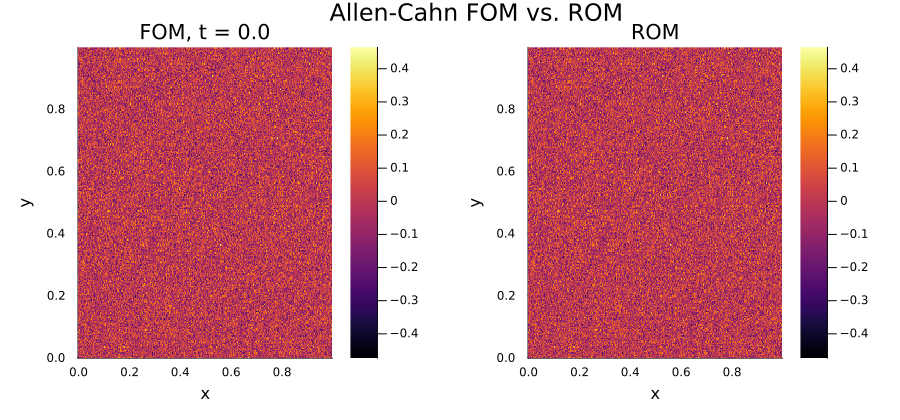
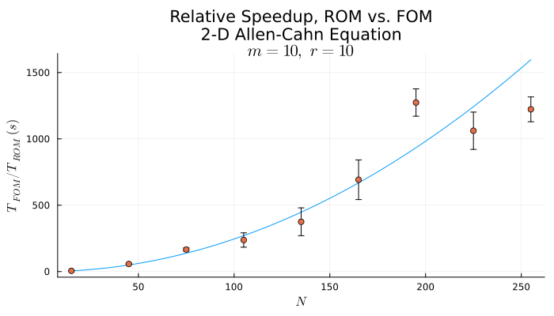
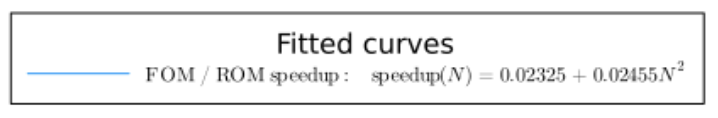
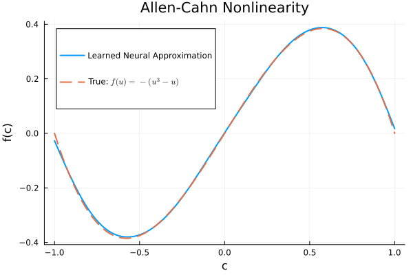
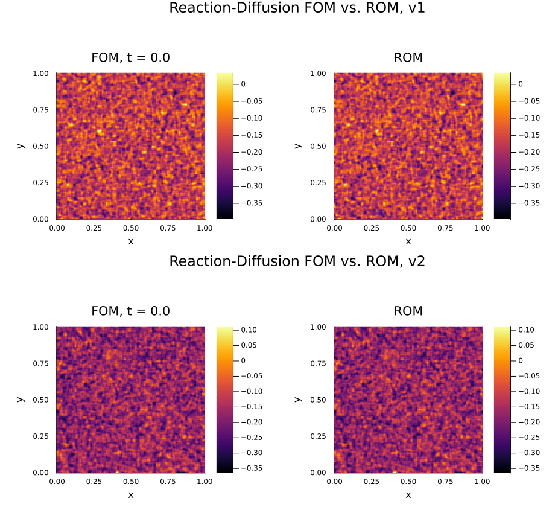
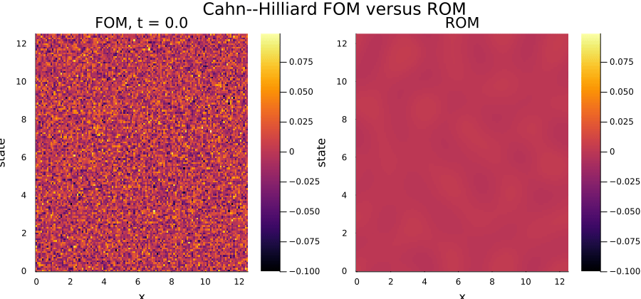
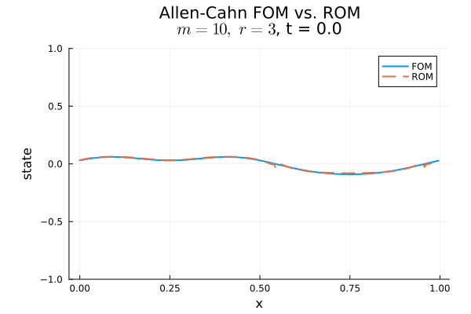

Allen–Cahn
Galerkin projection with 20 spatial modes and DEIM hyperreduction using 20 interpolation points.
Scientific poster companion
Fast, physics-aware surrogates for nonlinear dynamical systems—designed to retain the essential structure of high-fidelity simulations.
At a glance
We use projection-based reduced-order models (ROMs) to approximate large nonlinear systems in a low-dimensional space, then use hyperreduction to make nonlinear evaluations inexpensive.
Selected results
These figures summarize the speedups and neural-function approximation explored in the accompanying work.



Simulation gallery
Animations are embedded directly for smooth viewing on phones and desktops. They may take a moment to load on cellular data.

Galerkin projection with 20 spatial modes and DEIM hyperreduction using 20 interpolation points.

Galerkin projection with DEIM points divided between the two nonlinear components.

Petrov–Galerkin projection with five spatial modes and ECSW hyperreduction.

A compact example of the evolving system in reduced coordinates.
Methods, briefly
The Allen–Cahn and Cahn–Hilliard equations describe concentration fields as gradient flows of a Ginzburg–Landau free energy. Allen–Cahn decreases this energy in an L² sense; Cahn–Hilliard additionally preserves mass. The nonlocal Cahn–Hilliard model includes a term that captures polymer constraints in block copolymers.
Proper orthogonal decomposition (POD) chooses a low-dimensional basis from simulation snapshots. The full state is approximated as a linear combination of these modes, while Galerkin or Petrov–Galerkin projection produces an evolution equation for the reduced coordinates.
DEIM approximates nonlinear function evaluations using a small function basis and selected interpolation points. ECSW instead forms a sparse, nonnegative weighted quadrature rule in reduced space, a useful structure-preserving approach for suitable systems.